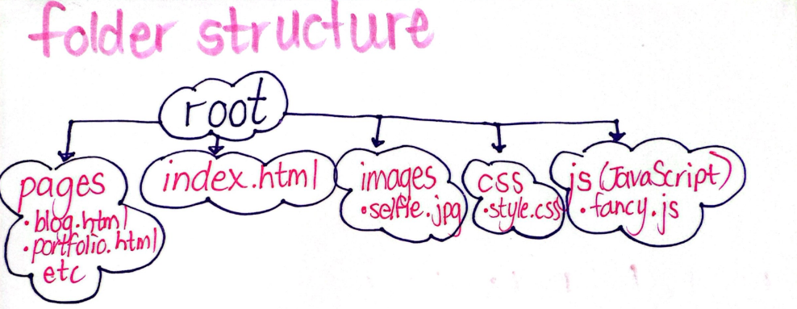

Folder Structure
Wireframe Ideas
Inspirational Websites
The following websites really caught my attention and all include a variety of aspects I would like to include in my portfolio website.
- https://www.christinavanessa.com/
- https://www.melyssagriffin.com/
- https://the-goonies.webflow.io/
- https://www.jackbromhead.com/
- https://jennadunford.github.io/PortfolioWebsite_2127324_InteractiveMedia/
- https://joshua-jandrell.github.io/JJ_Website/
- https://seanobrien.com.au/
Interface Elements
- Home Page
- Users will be able to use the navigation buttons at the top of the page to go from any page to another.
- Users will be able to scroll down to see the entire page (content more focussed on the website). A scroll bar will visually represent how far a user is down the page.
- When you hover over images, brief information on the image will also be visible.
- Users will be able to click links to social media profiles and other contact information.
- Profile
- Users will be able to use the navigation buttons at the top of the page to go from any page to another.
- Users will be able to scroll down to see the entire page (content more focussed on me as an individual). A scroll bar will visually represent how far a user is down the page.
- When you hover over images, brief information on the image will also be visible.
- Users will be able to click links to social media profiles and other contact information.
- Blogs
- Users will be able to use the navigation buttons at the top of the page to go from any page to another.
- Users will be able to scroll down to see the entire page. A scroll bar will visually represent how far a user is down the page.
- Users will be able to see the first blog post and then be able to click to the next blog post. Users can only click on the previous blog post and the next blog post. However a button will be made available that can take you to any blog post.
- Design
- Users will be able to use the navigation buttons at the top of the page to go from any page to another.
- Users will be able to scroll down to see the entire page. A scroll bar will visually represent how far a user is down the page.
- Users will be able to hover over images with titles whereby they will increase in size and provide a flavour text. Once clicked the user will be taken to a more detailed section of the specific design.
- Essays
- Users will be able to use the navigation buttons at the top of the page to go from any page to another.
- Users will be able to scroll down to see the entire page. A scroll bar will visually represent how far a user is down the page.
- Users will be able to see the first essay and then be able to click to the next essay. Users can go back and forth to the respective essays through arrow buttons.
- Portfolio
- Users will be able to use the navigation buttons at the top of the page to go from any page to another.
- Users will be able to scroll down to see the entire page. A scroll bar will visually represent how far a user is down the page.
- Users will be able to hover over images with titles whereby they will increase in size and provide a flavour text. Once clicked the user will be taken to a more detailed section of the specific project.
User Flow
Information Structure
Style Guide
I used the Color Picker website to find complementary and visually appealing colour combinations for a specific hex code I liked. The website provided the following colour guide which I would like to use in my website. I could use the following combinations in different sections of my blog and it would still appear aesthetically pleasing.
The following image is an analogous combination.
The following image is a tetradic combination.
The following image is a triadic combination.
The following image is a neutral combination.
I would like to stick to a legible and simple font and therefore I have chosen to use the Roboto font.